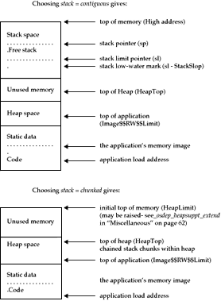

--------------------------------------------------------
=linked |causes the object module containing the
|floating point emulator to be included in the
|library (and linked into any image), along
|with a small interface module to take control
|of the illegal instruction vector on startup,
|and relinquish it on closedown.
--------------------------------------------------------
=module |floating point emulation is provided
|externally in some way (present in ROM, for
|example). In this case, if the
|target-dependent kernel follows the code of
|the riscos example, functions
|__fp_initialise, __fp_finalise and
|__fp_address_in_module must be provided.
--------------------------------------------------------
--------------------------------------------------------
=small |memcpy, memmove and memset are implemented by
|generic C code (which attempts to do as much
|as possible in word units): each occupies
|about 100 bytes.
--------------------------------------------------------
=fast |memmove and memcpy are implemented together
|in assembler, which attempts to do the bulk
|of the move 8 words at a time using LDM/STM
|(about 1200 bytes). memset is implemented
|similarly (about 200 bytes).
--------------------------------------------------------
--------------------------------------------------------
=small |the fully rolled implementations.
--------------------------------------------------------
=unrolled |unsigned and signed divide are unrolled 8
|times for greater speed, but obviously use
|more code. Complete unrolling of divide is
|possible, but should be done with care since
|the significant size increase might give
|decreased rather than increased performance
|on a cached ARM. Whichever variant is
|selected, fast unsigned and signed divide by
|10 are included.
--------------------------------------------------------
--------------------------------------------------------
=on |_main extracts Unix-style stdstream connection
|directives from the image's argument string (<
|, >, >>, >&, 1>&2).
--------------------------------------------------------
--------------------------------------------------------
=on |the default signal handler ends by producing a
|call-stack traceback to stderr. (Use of this
|variant is not encouraged, since it increases the
|proportion of the library that is linked into all
|images, while providing functionality better
|obtained from a separate debugger).
--------------------------------------------------------

A third variant, like the first, but with the stack outside of the heap and not under the application's control, can easily be synthesised. This may be a more appropriate variant if there is a skeletal operating system which implements an address-mapped stack segment.